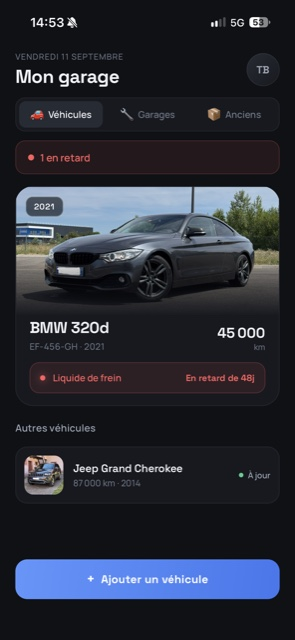
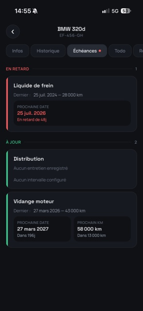
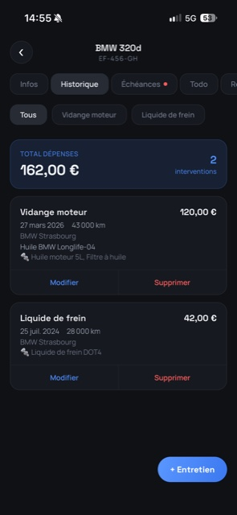
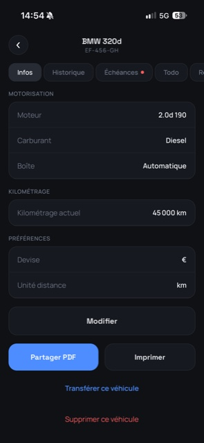
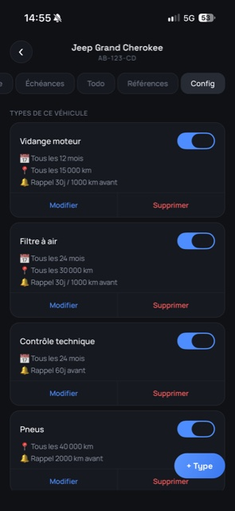
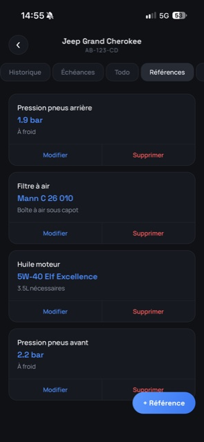
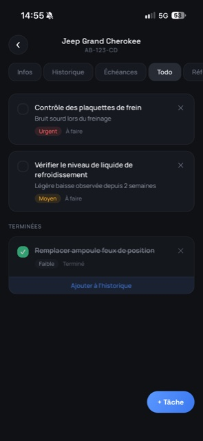
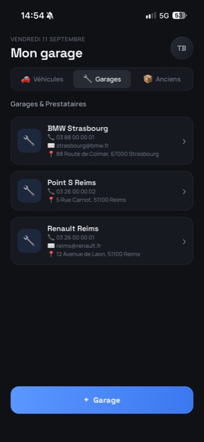

Le carnet d'entretien
de vos véhicules.
CarCare conserve l'historique de vos entretiens, calcule les échéances à partir du temps et du kilométrage, et vous prévient avant qu'elles ne tombent — voiture, moto, utilitaire.
À la revente, un carnet complet en PDF remplace la boîte à chaussures pleine de factures.
Application iPhone — en cours de validation sur l'App Store
L'application en images
Captures réelles, thème sombre. L'application suit aussi le thème clair de votre iPhone. Faites défiler pour voir la suite.








Ce que fait l'application
Suivi multi-véhicules
Voiture, moto, utilitaire. Fiche complète : identité, motorisation, kilométrage, photos.
Historique d'entretien
Date, kilométrage, coût, garage, pièces posées, commentaire et photo de la facture.
Échéances automatiques
Calculées en mois et en kilomètres. La première des deux échues déclenche l'alerte.
Rappels
Notification avant la date ou le kilométrage, avec un préavis réglable par type d'entretien.
Scan de factures
La reconnaissance de texte tourne sur l'appareil. Aucune image n'est envoyée ailleurs.
Export PDF
Un carnet complet à partager ou imprimer. L'argument qui rassure un acheteur.
Tâches et références
Ce qui reste à faire, et les données techniques du véhicule : pressions, filtres, huile.
Transfert de véhicule
Le jour de la vente, cédez la fiche et son historique au nouveau propriétaire.
Comment ça marche
- Créez votre compte en deux touches Connexion avec Apple ou Google. Ni mot de passe à retenir, ni formulaire à remplir.
- Ajoutez un véhicule Marque, modèle, immatriculation, kilométrage. Le reste est facultatif et se complète plus tard.
- Définissez ses entretiens Vidange tous les 12 mois ou 15 000 km, contrôle technique tous les 2 ans… Un jeu de types courants se charge d'un seul geste.
- Enregistrez ce que vous faites Chaque intervention met à jour le kilométrage et recalcule les échéances suivantes.
- Laissez l'application vous prévenir Elle vous rappelle ce qui arrive à terme, et vous sort le carnet PDF quand vous en avez besoin.
Vos données vous appartiennent
Ce qui ne quitte pas votre iPhone
Les photos de véhicules et de factures sont stockées dans l'espace privé de l'application et ne sont téléversées nulle part. La reconnaissance de texte des factures s'exécute entièrement sur l'appareil.
Ce qui est synchronisé
Vos véhicules, entretiens, tâches, références et garages sont enregistrés sur Cloud Firestore pour que vous les retrouviez après une réinstallation. L'accès est cloisonné par compte, côté serveur.
Ni publicité, ni traceur, ni mesure d'audience, ni revente de données. Le détail complet figure dans la politique de confidentialité.
Bon à savoir
| Prix | Gratuit. Aucun achat intégré, aucun abonnement. |
| Véhicules | Deux véhicules actifs. Les véhicules transférés passent en « Anciens » et ne comptent plus. |
| Appareils | iPhone. L'application s'installe sur iPad en mode de compatibilité iPhone. |
| Connexion | Sign in with Apple ou Google. Pas de mot de passe à gérer. |
| Langues | Français et anglais, au choix dans les paramètres de l'application. |
| Thème | Clair, sombre, ou automatique selon les réglages du téléphone. |
| Devises | €, $, £ et CHF, au choix pour chaque véhicule. |
| Distances | Kilomètres ou miles, au choix pour chaque véhicule. |
Questions fréquentes
Combien coûte l'application ?
Rien. Il n'y a ni achat intégré, ni abonnement, ni publicité. L'application suit deux véhicules actifs.
Mes photos sont-elles envoyées sur Internet ?
Non. Les photos de véhicules et de factures restent sur votre appareil et ne sont téléversées nulle part — y compris lors d'un transfert de véhicule, où elles ne sont pas transmises. Voir la politique de confidentialité.
Comment fonctionnent les échéances ?
Vous définissez, pour chaque type d'entretien, une périodicité en mois, en kilomètres, ou les deux. L'application part du dernier entretien enregistré et du kilométrage courant du véhicule, puis retient la première des deux échéances à tomber. Un préavis réglable déclenche la notification avant l'échéance.
Que se passe-t-il si je change de téléphone ?
Vos véhicules, entretiens, tâches, références et garages reviennent dès que vous vous reconnectez : ils sont synchronisés. Les photos, elles, sont stockées sur l'appareil — elles suivent une restauration depuis une sauvegarde iCloud ou iTunes, mais pas une installation neuve sur un téléphone vierge.
Comment supprimer mon compte et mes données ?
Dans l'application : Paramètres → Compte → Supprimer mon compte. Après une double confirmation, la suppression est immédiate et définitive — compte, données synchronisées et photos locales.
Une question ?
Écrivez à contact.chamallaw@gmail.com, ou consultez la page d'assistance pour les problèmes courants.